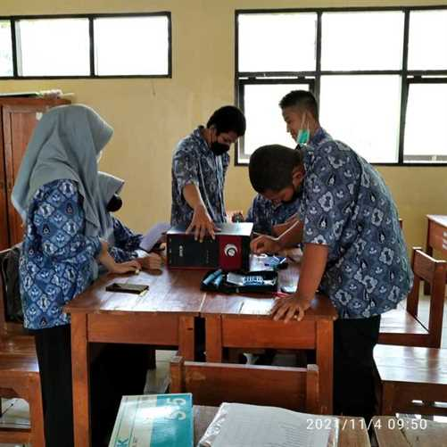
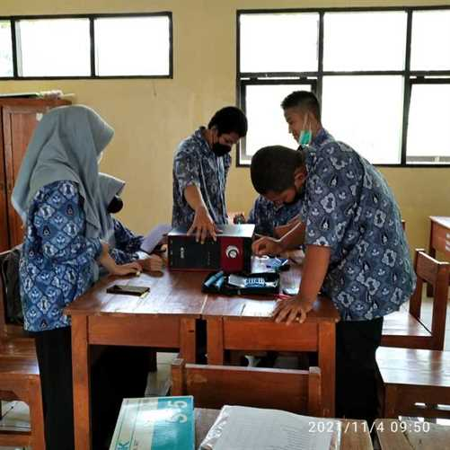

Teknik Komputer dan Jaringan atau yang biasa disebut TKJ adalah teknik yang mempelajari tentang cara instalasi Komputer, instalasi LAN (Jaringan Internet, Fiber Optik), memperbaiki Komputer (PC atau Laptop) dan mempelajari program-program komputer itu sendiri. Jurusan Teknik Komputer Jaringan ini selain mempelajari itu semua mereka juga dibekali dengan Troubleshooting Jaringan, trobleshoting komputer, perawatan komputer, perawatan printer dan perawatan hardware lainnya. Sekarang ini jurusan TKJ merupakan jurusan yang sangat populer/banyak peminatnya. Jurusan TKJ sangatlah mudah untuk dipelajari hanya modal kemauan untuk belajar dan terus belajar.
KOMPETENSI DASAR
- Komputer dan Jaringan Dasar
- Jaringan Komputer Dasar
- Dasar Desain Grafis
- Kerja Proyek
- Teknologi Jaringan Berbasis Luas (WAN)
- Administrasi Insfrastruktur Jaringan
- Administrasi Sistem Jaringan
- Teknologi Layanan Jaringan
- Produk Kreatif dan Kewirausahaan
TIM PENGAJAR MAPEL PRODUKTIF TEKNIK KOMPUTER JARINGAN
Tophan Akbar, S.Kom

Rizal Suyaman, S.Kom
Imas Rohayati, S.T

Taufiq Dzikri Pangestu, S.Pd
Intjer Kurnia Syukur, S.T

Dede Iskandar, S.T
KURIKULUM SINKRONSASI
Dalam penerapan kurikulum sinkronisasi Kompetensi Keahlian Teknik Komputer dan Jaringan SMKN 1 Subang telah melaksanakan kerja sama dengan salah satu institusi pasangan yaitu :
- PT JERBEE INDONESIA
- File Document Sinkronisasi :
SINKRONISASI KURIKULUM TEACHING TKI TKJ
DOKUMENTASI SINKRONISASI BERSAMA PT JERBEE INDONESIA


PROGRAM MAGANG GURU
Program Magang Guru adalah bagian dari system pelatihan kerja yang di laksanakan secara terpadu dimana guru melakukan kegiatan kerja secara nyata di luar sekolah misalnya di IDUKA selama kurun waktu yang telah ditentukan. Di bawah ini adalah dokumentasi Kegiatan magang guru di Instistusi pasangan yaitu PT. Jerbee Indonesia yang bergerak di bidang IT Sofware Development dan IT suport yang beralamatkan di Jl Suryalaya Tim. IV No.20, Cijagra, Kec. Lengkong, Kota Bandung, Jawa Barat 41213
Magang guru dapat meningkatkan relevansi kompetensi keahlian guru produktif dengan perkembangan ilmu pengetahuan dan teknologi yang ada di dunia usaha dan dunia industri. Guru dapat melihat secara nyata, tamatan seperti apa yang dicari, yang dibutuhkan oleh dunia usaha dan dunia industri itu nantinya. Tamatan Sekolah Menengah Kejuruan (SMK) seyogyanya adalah orang-orang yang kompeten, dan profesional di bidangnya. Mampu bersaing dengan calon-calon tenaga kerja tamatan sekolah lainnya. Soalnya, keberhasilan pendidikan kejuruan, diukur berdasarkan seberapa banyak lulusan dapat bekerja di dunia usaha dan dunia industri maupun berwirausaha mandiri. Saat ini, perkembangan ilmu pengetahuan dan teknologi (Iptek) di dunia usaha dan industri sering berjalan lebih cepat daripada perkembangan Iptek yang ada di SMK itu sendiri. Hal ini menyebabkan kompetensi keahlian yang diajarkan di SMK sering mengalami kesenjangan dengan kompetensi yang dibutuhkan dunia usaha dan dunia industri sehingga lulusan SMK belum siap bekerja saat mereka lulus.
Guru SMK yang punya wawasan dan terampil dapat menyiapkan lulusannya kompeten sesuai dengan kompetensi yang dibutuhkan oleh setiap bagian di dunia usaha. Kompetensi merupakan pengetahuan, keterampilan dan nilai-nilai yang direfleksikan dalam kegiatan berfikir dan bertindak. Kompetensi juga merupakan pengetahuan, keterampilan dan kemampuan yang dikuasai oleh seseorang yang telah menjadi bagian dari dirinya sehingga dia dapat melakukan perilaku-perilaku kognitif, afektif dan psikomotor dengan sebaik-baiknya. Bagi guru yang telah melakukan magang di dunia usaha atau dunia industri akan terasa bahwa masih banyak kekurangan-kekurangan atau kelemahan-kelemahan yang harus dibenahi oleh seorang guru dalam membelajarkan siswa. Program magang gurulah salah satu untuk menutupi kekurangan dan kelemahan guru tersebut.
KEGIATAN BELAJAR SISWA TEKNIK KOMPUTER JARINGAN


 

UNIT PRODUKSI TEKNIK KOMPUTER JARINGAN

Unit Produksi SMKN 1 Subang menjalankan fungsi bisnis dan edukasi. Pada fungsi bisnis, kegiatan usaha unit produksi berorientasi terhadap keuntungan (laba usaha). Sedangkan fungsi edukatif, pembentukan unit produksi dimaksudkan sebagai wahana belajar warga sekolah terutama peserta didik untuk pelatihan kewirausahaan sehingga tujuan akhirnya menghasilkan wirausahawan (enterprenuer).
Unit Produksi SMKN 1 Subang berpusat pada kegiatan usaha disetiap program keahlian yang terdiri dari Rekayasa Perangkat Lunak (RPL), dan Teknik Komputer dan Jaringan (TKJ). Adapun produk yang tersedia adalah :
REKAYASA PERANGKAT LUNAK
- Web Statis (Promosi Perusahaan, DLL)
- Web Dinamis (Profile Sekolah, Profile Persusahaan, DLL)
- Aplikasi Berbasis Web, Desktop atau Mobile
- Blog atau Web WordPerss
- Penjulan Hosting dan Domain
- Pengetikan dan Input Data
TEKNIK KOMPUTER DAN JARINGAN
- Pemasangan Jaringan (Local Area Network)
- Instalasi Komputer (Komputer Personal atau Laptop)
- Pemasangan Wifi
- Penjualan Acessorice Komputer
- Pemasangan Internet
- Perawatan Komputer
- Instal Antivirus dan Pembersihan Virus Komputer
- Pre Order Pembelian Barang
Info Selengkapnya silahkan menghubungi Unit Produksi Nesas.Tech di 087828158057 (Rizal Suyaman) atau 082321318282 (Dede Iskandar)
KEGIATAN PRAKTEK KERJA LAPANGAN KOMPETENSI KEAHLIAN TEKNIK KOMPUTER JARINGAN:
INSTITUSI PASANGAN